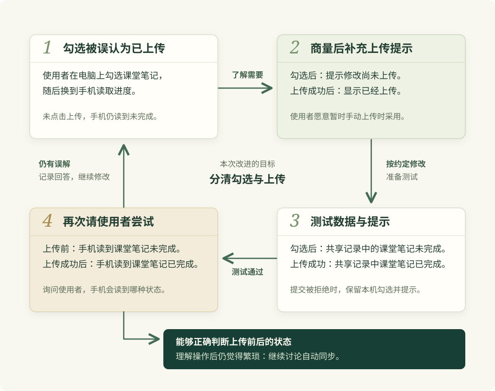

前面几节中，我们一直在开发复习清单。使用者勾选已经复习过的内容，程序就会在本机记录完成状态。上一节中，我们与合作者安排了电脑和手机之间的同步开发。现在，假设双方已经完成了手动上传和读取功能，准备邀请使用者试用。
这里采用的是手动同步。使用者在电脑上勾选“课堂笔记”以后，还需要点击“上传本机修改”，将电脑上的进度保存到服务端。使用者换到手机以后，再点击“读取共享进度”。手机上的程序收到服务端返回的数据，才会显示电脑上传的记录。电脑和手机共同访问的这份服务端记录，就是下面所说的共享记录。
假设在试用时，一位使用者在电脑上勾选了“课堂笔记”，随后拿起手机读取进度，却发现手机上的“课堂笔记”仍然没有完成。我们查看这位使用者的操作，发现勾选以后缺少了点击上传按钮这一步。使用者解释说：“页面上已经勾上了，我以为手机也能看到。”
当前程序要求使用者点击按钮上传，勾选本身只改变电脑上的记录。因此，手机读到的还是上传以前的进度。这位使用者把勾选理解成了已经上传，还没有分清两个操作的区别。我们需要改进页面，让使用者知道哪些修改还留在电脑上，以及什么时候已经上传成功。
如果使用者接着问：“能不能自动同步？”我们就需要了解使用者为什么希望自动同步。使用者可能忘记了还有上传按钮，也可能觉得每次换设备都要点击按钮很麻烦。我们可以继续问：“如果页面提醒你还有修改没有上传，你是否愿意暂时保留手动上传？”使用者的回答会影响我们接下来修改什么。
如果使用者希望每次勾选条目以后都自动上传，我们就需要在条目状态改变时调用上传函数。不过，手机可能暂时没有网络。例如，使用者在手机断网时复习完了“矿物识别”，并在清单中勾选了这项内容。手机上的程序需要保留这项修改，等网络恢复以后继续提交。
等待手机恢复网络期间，使用者可能在电脑上将“练习题”勾选为完成，然后点击上传按钮保存进度。手机恢复网络以后，如果程序仍用断网前的整份清单覆盖服务端，就可能改掉电脑后来上传的内容。因此，服务端发现手机提交所依据的记录已经过时，就需要拒绝保存。手机上的程序收到拒绝结果以后，需要保留“矿物识别”已完成的修改，再读取电脑后来上传的进度，显示两边哪些状态不一致，让使用者决定怎样合并。自动同步需要把这些情况处理完整，才能交给使用者日常使用。
如果使用者愿意暂时手动上传，我们可以与使用者商量，先增加上传状态提示。例如，使用者在电脑上勾选“课堂笔记”以后，页面显示“本机有待上传的修改”；上传成功以后，页面显示“本机当前进度已上传”。第一条提示要告诉使用者，当前修改还留在电脑上，换到手机以前需要点击上传按钮。
这项改动的目标是让使用者分清“在电脑上勾选了内容”和“已经把进度上传到服务端”。如果使用者理解了提示，却仍然觉得手动上传繁琐，我们就需要继续安排自动同步。增加提示以后，自动同步的要求仍保留在待做的工作中。
假设我们原本打算在手动同步完成以后调整页面布局，现在却发现使用者会把尚未上传的进度当成已经上传。我们可以与使用者商量，将提示改进排在布局调整前面。
敏捷开发关注的正是这类情况：开发者已经制定了计划，但随着软件逐步做出来，使用者会发现原先没有表达的需要，开发者也会发现先前判断中的遗漏。团队通过经常提供能够使用的软件，与使用者讨论实际遇到的问题，再据此调整后续开发。对于复习清单，我们要了解的就是：使用者能否正确上传进度，页面是否帮助使用者理解当前状态，以及手动上传是否仍然让使用者感到麻烦。
2001 年，来自极限编程、Scrum、DSDM、Crystal 等不同背景的参与者共同形成了《敏捷软件开发宣言》。宣言提出了四组价值取向，肯定流程、工具、文档、合同和计划的作用，同时更重视人员之间的交流、能够使用的软件、与客户合作，以及根据变化调整安排。我们可以结合当前项目，理解这些取向会怎样影响开发：
| 重视什么 | 在复习清单中具体做什么 | |
|---|---|---|
| 人员之间的交流 | 如果我们与合作者对上传失败的返回值理解不同，就需要一起对照服务端和网页代码，确定哪个返回值表示失败。讨论以后将结果写进接口说明，双方据此修改调用代码。 | |
| 能够使用的软件 | 任务表写着“上传提示已完成”，还需要运行页面：勾选“课堂笔记”时显示待上传，服务端接受修改后才显示上传成功。我们根据这些实际结果判断功能是否完成。 | |
| 与使用者合作 | 我们请使用者尝试手动上传，并询问使用者是否知道手机能够读到什么。如果使用者理解操作以后仍要求自动同步，就继续讨论这项需要，调整待做工作的顺序。 | |
| 根据变化调整安排 | 原计划准备调整布局，试用却暴露了上传状态容易误解的问题。我们与使用者商量以后，可以推迟布局调整，优先补充提示，并让合作者知道开发顺序已经改变。 | |
讨论提示时，我们可以把文字放进已有的手动同步页面，让使用者实际尝试。使用者勾选“课堂笔记”以后，需要根据提示判断是否还要点击上传按钮。取得上传结果以后，使用者还需要知道手机能否读取到这项修改。如果使用者在某一步有疑问，就可以指出当时看到的文字，我们也能据此了解是哪句话容易误解。
这也解释了为什么要尽早安排试用。假如我们写完自动同步的全部代码以后，才发现使用者希望每次上传前确认内容，就可能需要回头修改已经写好的操作。较早提供手动同步版本，可以让我们在继续投入以前询问使用者是否需要确认，并把实际回答用于后续实现。这与敏捷原则中及早提供软件、持续与使用者合作的要求相符。
不过，邀请使用者尝试以前，我们需要自己运行程序，确认新提示确实按照上传结果显示。对于正常上传，可以按照下面的顺序验证：
- 我们将电脑本机记录与共享记录中的“课堂笔记”都设为未完成。在电脑页面中勾选这项内容以后，程序应显示已完成，并提示尚有修改没有上传。此时共享记录中的“课堂笔记”应保持未完成。
- 我们在电脑上点击“上传本机修改”，等服务端返回保存成功。我们需要核对共享记录中的“课堂笔记”已经改为完成，页面随后才显示上传成功。
- 我们在手机上点击“读取共享进度”。手机上的程序取得刚才保存的记录以后，“课堂笔记”应显示为已完成。
提交被拒绝时，页面应该显示什么，需要结合拒绝的原因来说明。前面的同步方案采用了版本检查：服务端每次接受修改，都会把进度的版本号加 1。例如，原来是第 7 版，成功保存以后就成为第 8 版。电脑上的程序读取进度时会记下版本号，上传时带上这个号码，让服务端知道提交的数据是基于哪份记录修改的。
假设使用者在电脑上点击读取，程序取得了第 7 版进度。随后，使用者在电脑上勾选了“矿物识别”，但尚未上传。这时，使用者换到手机，在清单中将“练习题”标为完成并点击上传，服务端成功保存后将版本号改为 8。使用者回到电脑点击上传时，电脑上的程序仍然带着第 7 版的号码提交，因此服务端能够发现这份数据没有包含手机刚上传的修改。为了避免电脑的旧数据覆盖手机的修改，服务端会拒绝保存这次提交。
由于这次提交没有保存成功，电脑上的“矿物识别”尚未进入共享记录。网页需要保留电脑上这项已经完成的状态，同时显示“提交被拒绝，本机修改尚未上传”。否则，使用者可能以为进度已经上传，拿起手机后却读不到刚完成的内容。验证这段行为时，我们应看到：电脑上的“矿物识别”仍然完成，共享记录中这项内容未完成，而手机上传的“练习题”保持完成。
正常上传与拒绝提交都符合要求以后，我们还需要再次请使用者操作。试用开始时，将本机和共享记录中的“课堂笔记”都准备为未完成，并让电脑读到当前共享版本。我们请使用者在电脑上勾选“课堂笔记”，暂时保留尚未上传的状态，然后问：“现在用手机读取，课堂笔记会显示已完成，还是未完成？”根据当前规则，预期回答是未完成，因为服务端还没有收到电脑上的修改。
等使用者回答以后，我们可以请使用者在手机上点击读取，再将手机实际显示的状态与刚才的回答核对。如果使用者认为手机会显示已完成，我们就需要询问这个判断依据了页面上的哪句话，再讨论怎样修改那句话或提示的位置。等使用者在电脑上点击上传并取得成功结果，我们再问相同的问题。此时预期回答是已完成，因为服务端已经保存了新进度，手机随后可以读取到它。
这两次提问帮助我们了解使用者有没有理解手动同步。如果使用者在上传前后都能正确判断手机会读到什么，我们就可以继续询问手动上传是否方便。如果使用者已经理解，却仍希望省去反复点击按钮的操作，就应当继续讨论自动同步的开发时间。对于这种回答，只修改提示文字无法满足使用者的需要。

如果开发时间有限，我们还需要决定哪些改动能够在本次完成。假设我们与合作者每周只有两个晚上能够开发，而本次除了提示还准备调整按钮位置。正常上传的提示已经写好，拒绝提交时却仍然显示上传成功，那么这项错误就需要继续修复。试用版本需要正确区分成功与失败，因此我们可以与使用者商量，暂缓调整按钮位置，将现有时间用于修复失败提示和运行相应测试。
按钮位置可以在后续试用中继续调整，上传是否成功则需要在当前版本中明确告诉使用者。安排下一次开发时，我们还要考虑这次调试实际花了多少时间。如果每次都要靠熬夜才能完成原定任务，就需要减少后续安排的工作量，把调试和测试所需的时间算进去。敏捷原则也强调团队应当维持能够持续投入的开发节奏。
敏捷思想可以通过不同的开发方法落实。Scrum 为团队协作规定了相应职责与活动，是否采用需要结合当前任务与成员能够投入的时间判断。对于复习清单，我们需要根据使用者的实际困难选择改动，并通过程序运行和使用者试用确认结果。
项目当前的任务不同，需要投入的开发工作也会不同。我们可以根据下面这些具体条件安排：
- 如果当前只想在半天内了解使用者怎样理解导入预览，可以做一个快速原型，直接请使用者操作。根据使用者的回答修改预览以后，我们再决定文件读取与保存怎样实现。当前需要的是尽早弄清操作方式，开发活动可以围绕这次试验安排。
- 如果工作主要是处理随时出现的紧急故障，当天必须响应的任务会经常改变优先级。团队可以持续接收任务，按紧急程度排序，并限制同时处理的数量。修复当前故障以后，开发者根据当时的顺序领取后续任务。采用固定周期时，则需要另外约定紧急故障由谁处理，避免原有目标不断受到打断。
- 如果任务是修复已经定位的导出字段错误，我们已经知道哪一行代码需要修改，也知道怎样验证生成的文件，就可以直接安排修复与代码审阅。修改后重新运行导出和导入，确认旧文件仍能读取，再提供修复版本。这项短期工作的安排可以围绕已经明确的修复与验证进行。
- 如果使用者很难参加试用，就需要与使用者约定能够参与的时间，或者寻找熟悉相应使用任务的人帮助评审。缺少这些反馈时，开发者仍可能误判使用者对手动上传的需要，内部开会的次数无法说明这个需要是否已经得到满足。
同步功能还需要技术验证，以确认并发提交时能够保留正确进度。例如，两台设备几乎同时提交，服务端处理两次请求时都读到了第 7 版。如果两次请求都通过版本比较，后一次保存就可能覆盖前一次结果。因此，开发者需要实现版本比较与写入之间的保护，并通过同时提交的测试验证。在提供涉及进度写入的正式版本以前，这项验证需要完成。
在这些任务中，前面学过的做法仍然可以使用。提示文字没有确定时，我们可以做快速原型，请使用者比较怎样表达更好懂。服务端的提交规则可能丢失进度时，我们可以按照 1.6 的做法安排风险实验。如果采用上一节的统一过程，也可以把这项实验放进细化阶段的迭代，等运行结果表明关键做法可行以后，继续实现剩余功能。
你可以打开上传状态实验，也可以下载实验项目与反馈记录模板。实验页面用内存中的本机记录和共享记录运行上传、读取操作，刷新后会恢复初始状态。如果你已经实现了自己的同步服务，还需要在原项目中验证网络请求和服务端保存。
打开实验以后，保持“显示上传状态提示”关闭，勾选本机的“课堂笔记”。这时本机显示已完成，共享记录中的这项内容应保持未完成。你可以展开“查看共享记录与另一台设备”，核对这两个状态，再打开提示，查看它有没有说明修改尚未上传。
随后点击“上传本机修改”。上传成功以后，共享记录中的“课堂笔记”应变为已完成，提示应显示本机当前进度已上传到第 8 版。这里的第 8 版，就是初始第 7 版记录接受这次修改后的版本。
拒绝提交的情况需要重新开始。点击“恢复初始状态”，在本机勾选“矿物识别”，然后点击“模拟手机上传练习题进度”。这次操作会通过页面函数，模拟使用者在其他设备上修改并上传的过程，使共享记录成为第 8 版。随后点击本机的“上传本机修改”，本机仍然依据第 7 版提交，程序应拒绝这次提交。你需要核对本机保留了“矿物识别”的勾选，共享记录则只有“练习题”完成。打开提示以后，页面应说明提交被拒绝，本机修改尚未上传。
如果你邀请使用者尝试，可以按照前面的两次提问记录实际回答。对于尚未上传的“课堂笔记”，预期手机读到未完成；上传成功以后，预期手机读到已完成。提问时让使用者依据页面作出判断，等使用者回答以后再解释原因，才能了解页面本身是否容易理解。没有邀请他人时，试用结果保留为待执行。
阅读复习清单代码和 feedback.md 中已有的实际记录。
在 feedback.md 中写明使用者想怎样在电脑与手机之间继续复习。
按实际发生的顺序记录：勾选了哪项内容、是否点击上传，以及手机读取到了什么。
准备两次提问：
第一次在勾选课堂笔记、尚未上传时，问手机读取后会显示什么状态。
第二次在上传成功后，问手机再次读取会显示什么状态。
第一种情况下应读到未完成，第二种情况下应读到已完成。
记录使用者的原话，再与共享记录对照。
使用者回答以前，保留这两次提问的结果为待执行。
如果使用者要求自动同步，继续询问使用者是否愿意暂时手动上传。
将使用者的回答写进记录，开发者自己的推测另行说明。
当前保持程序原状。你取得实际反馈以后，可以在 improvement-plan.md 中写下准备修改的内容。例如，使用者以为勾选以后已经上传，就可以提出增加待上传提示。使用者已经理解操作却仍觉得繁琐，则需要继续讨论自动同步。你需要记录自己准备采用哪项改动，以及使用者的哪句回答支持了这个决定。
确定范围以后，你可以让编程助手依据当前代码准备修改，并在 checks.md 中写出运行步骤。正常上传时需要看到什么，提交被拒绝时需要保留什么，应当分别写明。
依据 feedback.md，在 improvement-plan.md 中提出准备修改的内容。
如果使用者愿意暂时保留手动上传，说明提示准备显示在哪里。
写清勾选课堂笔记以后、上传成功以后，以及提交被拒绝时分别显示什么。
如果使用者希望尽快实现自动同步，记录这个要求，重新估计需要完成的工作。
在 checks.md 中写出测试步骤。
对于正常上传，核对本机课堂笔记已完成、共享记录何时改为已完成。
对于被拒绝的提交，核对本机矿物识别的勾选得到保留，
并确认共享记录中练习题已完成、矿物识别未完成。
两种情况分别记录页面应该显示的文字。
准备的改动交给我审阅，我确定范围后再修改代码。
实际结果在运行以后填写。代码改好以后，你需要运行这些步骤，再填写实际数据和页面文字。程序符合原定要求以后，再次邀请使用者尝试，记录使用者在上传前后的回答。你可以在 reflection.md 中据此决定是否继续修改提示，或者与使用者协商自动同步的开发顺序。
阅读代码差异、checks.md 和我提供的实际试用记录，填写 reflection.md。
逐项说明已经运行了什么操作，以及数据和提示是否符合原定要求。
没有执行的测试保留为待执行。
根据使用者在上传前后的回答，判断使用者是否理解了手动上传。
如果使用者仍将勾选理解成已经上传，提出提示文字或位置的修改建议。
如果使用者理解了操作，但认为反复点击上传很麻烦，
将这项需要与自动同步联系起来，提出后续开发建议。
记录准备推迟或增加的工作，并说明是哪项实际结果促成了这个决定。
如果开发中发生接口变更遗漏，写明哪次修改没有通知到谁，
再提出通知与联合测试的具体改进办法。
使用者尚未尝试的部分保留为待执行。前面几节介绍了不同的过程模型。下一节将结合复习清单，讨论怎样根据当前任务选择做法，以及项目条件变化以后怎样调整。